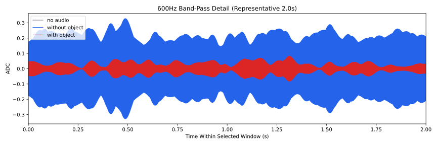
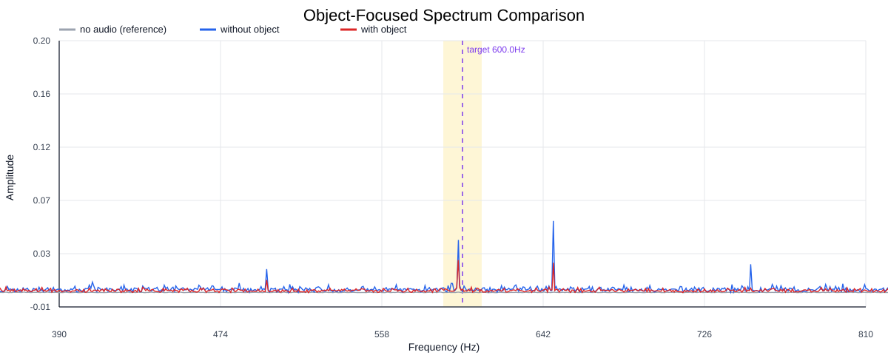
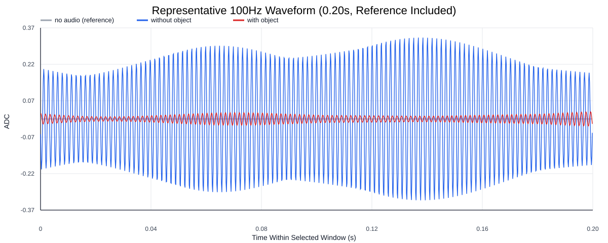
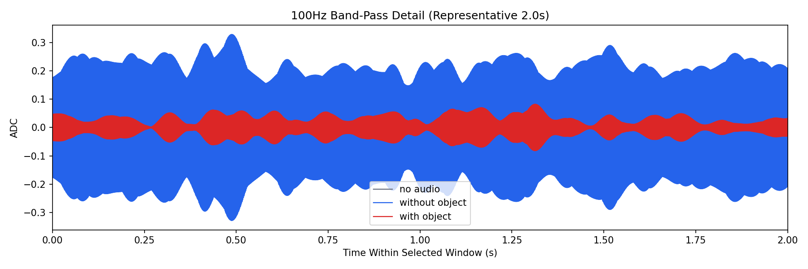
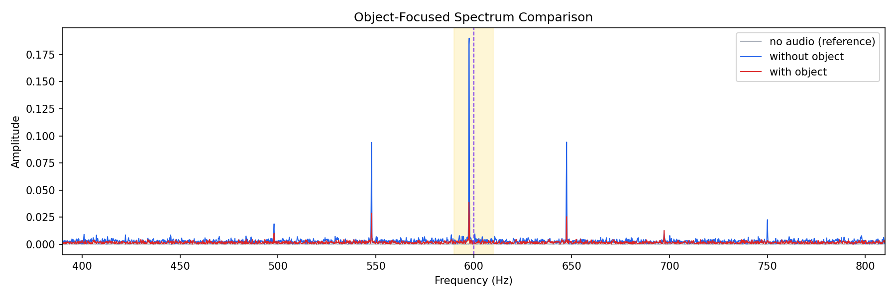
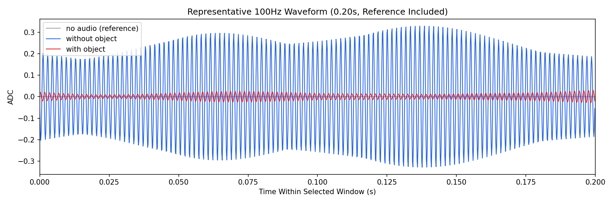

Background: F:\项目类文件夹\异物检测4.10\Data_Dual\frequency_sweep\0600Hz\repeat_04\raw\no_audio.csv
Without object: F:\项目类文件夹\异物检测4.10\Data_Dual\frequency_sweep\0600Hz\repeat_04\raw\without_object.csv
With object: F:\项目类文件夹\异物检测4.10\Data_Dual\frequency_sweep\0600Hz\repeat_04\raw\with_object.csv
| Metric | 无音频 | 100Hz无异物 | 100Hz有异物 | 无异物/无音频 | 有异物/无异物 | 有异物/无音频 |
|---|---|---|---|---|---|---|
| centered_rms | 0.015153 | 0.330300 | 0.165309 | 21.7973 | 0.5005 | 10.9091 |
| raw_target_amp | 0.000233 | 0.001076 | 0.000743 | 4.6213 | 0.6907 | 3.1921 |
| filtered_rms | 0.001352 | 0.154472 | 0.035014 | 114.2673 | 0.2267 | 25.9010 |
| filtered_target_amp | 0.000233 | 0.001076 | 0.000743 | 4.6213 | 0.6907 | 3.1921 |
| filtered_energy_ratio | 0.007959 | 0.218717 | 0.044864 | 27.4814 | 0.2051 | 5.6370 |
| window_filtered_target_amp_mean | 0.000677 | 0.213618 | 0.044172 | 315.6558 | 0.2068 | 65.2713 |
| window_filtered_target_amp_std | 0.001624 | 0.032288 | 0.020009 | 19.8762 | 0.6197 | 12.3176 |





